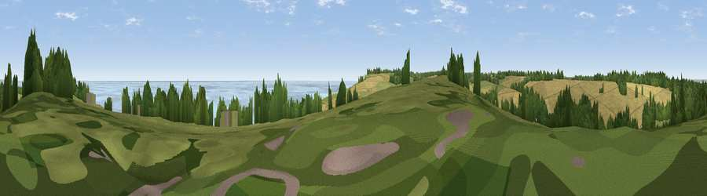

Viewpoint near Kingsdown
#9343 in England · top 29% of its area beats it · near KingsdownThe view, rendered

A 360° render of this exact spot computed from the terrain model, tree cover and land cover — summer colours, afternoon light, calibrated against photographs of famous viewpoints. Real trees, hedges and buildings will differ in detail.
The panorama
Grey silhouette: terrain skyline in each direction (720 bearings, Earth curvature and refraction included). Dashed green: skyline with trees (+15 m) and buildings (+8 m) as obstacles. Blue strip: how far the ground is visible on each bearing.
Where the view opens
Wedge length = distance to the farthest visible ground on that bearing (vegetation-aware). Rings at 10, 25 and 50 km.
What fills the view
58% water · 19% grassland · 17% cropland · 6% woodland ·
Angular shares of the visible panorama (visual magnitude), not map area. Landscape diversity 0.49 (0–1 Shannon).
Key numbers
More beautiful places nearby
The staircase of upgrades: each row has a higher view potential than everything closer. Driving times are estimates from straight-line distance, calibrated against real road routing — check an actual route before setting out.
| Place | Direction | Drive | Score |
|---|---|---|---|
| Viewpoint near St. Margaret's at Cliffe | SSW · 2 km | ~4 min | 68.5 |
| Viewpoint near St. Margaret's at Cliffe | SW · 4 km | ~10 min | 72.4 |
| Viewpoint near Dover | SW · 7 km | ~15 min | 75.7 |
| Viewpoint near Dover | SW · 9 km | ~18 min | 76.4 |
| Viewpoint near Capel-le-Ferne | SW · 12 km | ~22 min | 77.1 |
| Viewpoint near Capel-le-Ferne | SW · 13 km | ~23 min | 77.9 |
| Viewpoint near Capel-le-Ferne | WSW · 16 km | ~29 min | 80.2 |
| Viewpoint near Willingdon | WSW · 91 km | ~116 min | 83.4 |
51.17068, 1.39858 · source: screening · position refined by local search. Computed location — check access rights before visiting.